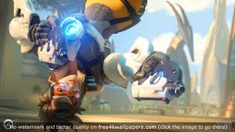
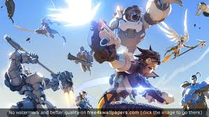
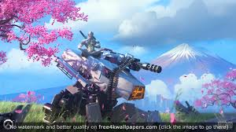
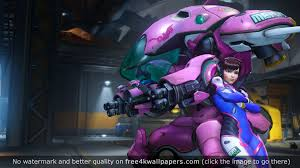
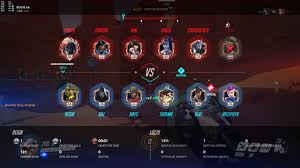

Overwatch Review
BY VINCE INGENITO Overwatch exists at an intersection between design and artistry, a crossroad at which pure tactile joy meets refined, intelligent design to create a rare spark of magic. As a 6v6 multiplayer, objective-based shooter, it finds accessibility not by lowering the skill ceiling, but by broadening the definition of skill. The person with deadshot aim is no more valuable than the person with the decision-making ability to know when a well-timed ability will turn an engagement, or the person with the map-sense to find the optimal locations to place sentry turrets. While it didn't exactly drown me in options, maps, and modes, it’s blessed with a multitude of tactical layers, and none of them ever came between me and my enjoyment of its intense, swirling teamfights, and thrilling overtime comebacks.
Overwatch does a great many things well, but above all else, its success is built on the backs of its many excellent characters. It’s fitting that the main menu is dominated by one of them at all times; their diverse appearances, origins, and personalities are all laid bare with every pose they strike. Reinhardt’s rocket hammer lands on his shoulder with a meaty clank that invokes a broadsword resting against a medieval knight’s plate armor, and Tracer’s jovial smile is just briefly interrupted by a rebellious bang that slides across her face, tempting her to blow it back into place before re-addressing the camera and blinking all over the place. There’s an intelligent gorilla scientist, a lithe, blue-skinned assassin, and a cybernetic, zen-practicing healer too. It speaks volumes that the one character that adheres to well-worn shooter tropes feels like the odd man out here. They’re all so different that you’d imagine them looking silly standing next to one another, but through careful, subtle visual cues baked into their equipment and attire, they manage to appear as if they share a common world, even if they all hail from different corners of it.
You could spend many hours playing Overwatch before getting to that point by properly wrapping your brain around all the little intricacies it has tucked away behind its approachable veneer, but you certainly don't need to just to have a good time with it. Just trying out different characters, popping off their abilities, and moving through their world feels almost indescribably right, and it's all because of tiny, almost imperceptible details. The lid on Junkrat's grenade launcher flaps and clanks about with his every move, Lucio's movement has just the slightest touch of inertia, so you actually feel like you're skating when you play him. Zenyatta's reload animation might be my favorite; I never got tired of watching him open his arms to materialize a new set of orbs before clasping them together with a satisfying, metallic thud. It's a small thing, sure, but the sum of these minute details is that almost every action, even the ones you repeat again and again, feel just a little bit magical.




